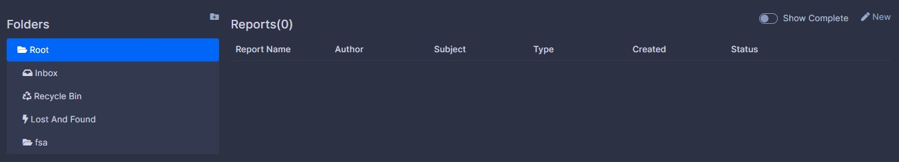
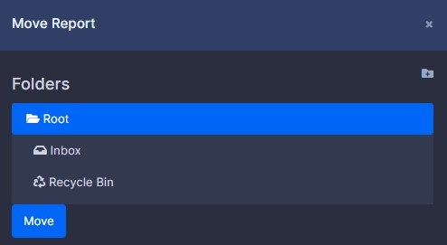

Reports

Introduction
Since introduced in version 2, reports have been a very useful feature for towns to maintain there own custom data. However, they were not without flaws. Version 3 added a feature to automatically read a subject field in the report template. However, it wasn't a really well-understood solution. With version 4, we think we have the best solution for the issue. Reports now have a file name. The subject can be directly a Town Registration or Social Registration. For searching all related documents to that person. You can also place them in custom folders you create with unlimited subfolders, transfer them as copies of original between all departments. Regardless of that department has the same template or not. Best of all, the templates are now saved with the report. No more worrying about losing reports if the template gets deleted.
Creating a report.
Click New on the far right. If you wish to attach it to a person, use the citizen search field. Fill out the name, select a report template. You can hand fill the subject if it's not related to a citizen, then select a status. Each report is different depending on how the town owner creates it.
Note
If you do now, see a submit button to inform your town owner. Likely they have removed the button from the template by mistake.
Editing a report
If you have the ability, click the edit button. The same form as new will appear to make your changes and hit submit.
Deleting a report
If you have the ability to click the trash icon.
Note
Reports do not delete right away. They are moved to the Recycle Bin and can be recovered for 14 days.
Creating a folder.
You must have write access to the reports section your in. Click the new folder icon right next to folders. It will create a new folder inside whatever folder you have selected.
Deleting a folder
You must have delete access. Select the folder you wish to delete and click the delete folder icon.
Note
Folders must be empty of all folders and reports to delete.
Transferring a report
Click the transfer report icon. A dialog will appear with a list of sections you can transfer to. By default, you are transferring as a copy. If you uncheck this option, you must have update abilities in the section.
Moving report
To move a report to a new folder, click the move icon. Select the folder you wish to move it to.
Note
You can only move a report one folder up or down at a time.

Viewing a report
Click the view report icon. This will open the report in read-only mode. No changes can be made in this mode.